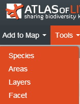
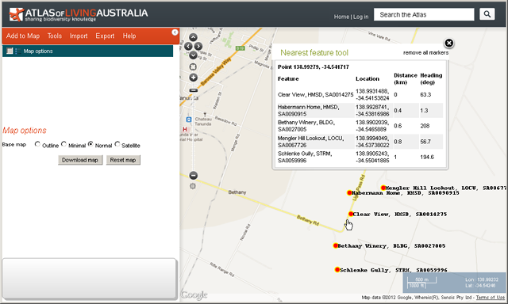

The scatterplot function links the sampled values of any two environmental variables on a species (or genus etc) with the map. Points on the scatterplot represent the environment found at each occurrence record, as given by the environmental variables of the two axes of the scatterplot.
The scatterplot (environmental space) and the map (geographic space) are linked. Dragging a rectangle over an area of the scatterplot to enclose occurrence points will highlight the corresponding points on the map. You can also define an active area on the map and have all occurrences within that area highlighted on the scatterplot.
The scatterplot allows you to:
- Examine the environmental niche of one or two taxa or taxonomic groups. Using a species as the primary taxa and its genus as the secondary taxa can be highly informative. For example, survey effort for the species may be able to be evaluated. Two similar species can be plotted to see how they may be partitioning the environment.
- Identify where species do not seem to occur. Areas in the scatterplot that do not contain occurrences are just as interesting as areas that do. Species may not occur in an area of the scatterplot for at least four reasons:
- The species may not be able to survive in that environment.
- The species may occur in that environment but there has been no surveys to look for it.
- The environment may have been surveyed but the species was not found, even though it was there.
- The species may be in that environment, but misidentified.(the scatterplot functionality has been designed to help discern what reason seems the most likely)
- Identify where a species tolerates a wide range of environmental conditions.
- Identify sub-populations that may adapt best to various climate change scenarios.
- Identify what environmental combinations exist within an area.
From the menu option, select ‘Tools’ and then ‘Scatterplot’.
Options
The scatterplot requires a minimum of three parameters - a species or taxonomic group and two environmental variables.
- A primary species or any taxonomic group. The occurrences of this group are the points on the scatterplot (e.g. Eucalyptus camaldulensis).
- Optionally, a second species or taxonomic group can be selected as a background (e.g. the genus Eucalyptus).
- Two environmental layers (e.g. Temperature - annual mean (Bio01) and Precipitation - annual (Bio12)).
Faceting on legends
Any legend permits modification of the display of the associated layer. In the scatterplot tool, this means that both the points (occurrences) in both the map (geographic) and environmental (scatterplot) space. To activate the legend in the scatterplot, click on the ‘Species display setting’ button. This will create a floating legend that will permit rendering the points in both spaces on the basis of selected legend properties. For example, in the image at the top of the page, under the facet dropdown box on the legend, “Institution” was selected and the Apply button pressed. After a little while (for many points) the points on the scatterplot and the map will be coloured according to the institution facet.
For more detailed information on Scatterplot faceting »
Additional Options
- Highlight active area occurrences. Selecting this option will highlight those occurrences on the scatterplot occurring within the map’s defined active area.
- Display possible environments in area produces a grey-scale background on the scatterplot that delineates the combination of environments that occur within the full range of possible environmental values. Environmental combinations outside the environmental envelope do not occur in nature and are shown in light blue. The grey-scale represents the geographic (map) area of the environmental combinations. Light colours imply a greater area of the environmental combination than darker colours, thus providing an indication of the spatial extents of the environments.
- The Select records with missing values check box will highlight those occurrences on the map that have one or more missing environmental values. In most cases, missing values will occur when occurrences are off the extent of the environmental surface, e.g. terrestrial occurrences occurring in marine or limnetic environments or vice versa. The number of occurrences with missing environmental values is also listed.
- Selecting occurrence points on the scatterplot. A rectangle area can be created on the scatterplot by dragging the mouse between any two points. When the left mouse button is released:
- the area perimeter will be displayed on the scatterplot with a black border.
- primary taxa in this area will be highlighted on the map.
- the number of records selected will be listed.
- the range of both environmental variables for the rectangle area will be listed.
- the add in/out layers to the map button creates two new layers to the layers list: an IN-group that includes all the occurrences within the environmental rectangle and an OUT-group that contains all occurrences not within the environmental rectangle. The legend and look of the IN/OUT layers can be altered the same way as for other species layers. See the Layer Interaction Panel for a screenshot of the species legend.
- The Download databutton creates a CSV (comma-separated values) file of the data used to create the scatterplot. The variables are the:
- Occurrence record identifier.
- Status of the scientific name occurrence: ‘Uploaded’ or ‘In Active Area’ (for those records highlighted in the active area of the scatterplot, there will be both an uploaded and an in active area record).
- X - environmental variable value.
- Y - environmental variable value.
- The Download image button will create a png image file of the scatterplot as displayed when the button is pressed. This file can be viewed or downloaded.
A case study
A case study on using the scatterplot tool to investigate the distribution of Banksia integrifolia in Australia, is given by Dr Ben Raymond of the Australian Antarctic Division, Hobart.
Read the Case Study »
A worked example
- Eucalyptus camaldulensis as the Primary species.
- Eucalyptus (genus) as the background taxonomic group.
- Temperature – annual mean (Bio01).
- Precipitation – annual (Bio12).


For Step 4, we are now using the general window for any type of environmental/contextual layer selection. If you tick the box next to “Display possible environments“, the scatterplot will be shaded (from dark meaning a small area of that environmental combination - to light meaning a large area of that environmental combination) to display what environmental combinations are possible - and not all are, thankfully.
In the context of the scatterplot, it is likely that you will want to use the ‘Add from search‘ box and either enter part of the name of the layer or its short name (e.g., Bio01 for “Temperature - annual mean”) and then check the box on the left of the name to select it. Ditto with the second layer. At the bottom of the window, you will see the number of layers selected and this should equal 2 before clicking on the next key (bottom right).
An alternative is to import the names of the two layers from a file - and this can be done from the top dropdown box. The names of the two selected layers can of course also be exported using the ‘Export set’ button at the bottom of the table. You can then re-import the list using the import option from the top dropdown box.
Layer selection
Once you have entered the name of the primary taxa (Eucalyptus camaldulensis), the (primary) occurrences are mapped.
The background taxa group is the genus Eucalyptus. This gives us a good indication of what environments the genus covers and what portion of that environment is covered by E. camaldulensis. These occurrences are only mapped on the scatterplot in orange in the background. The E. camaldulensis is shown by blue points. If the highlight records in the active area was selected, then those records would be ringed with a red circle.
In the worked example, we will use temperature (Temperature - annual mean (Bio01)) and precipitation (Precipitation - annual (Bio12)) as the two environmental variables to define the environment. Once these two variables have been added, the scatterplot is generated. As there is a large number of occurrences (Eucalyptus has over 240,000 records), processing can take up to a minute or so. The distribution of Eucalyptus (orange dots) covers a significant portion of the scatterplot, thereby indicating that the genus can handle a wide range of temperature and rainfall conditions. The majority of the distribution is below 2,500mm rainfall, with two higher rainfall extensions at low and high temperature. To learn more about the environment used by the genus, make it the primary taxa.
Eucalyptus camaldulensis is located toward the bottom of the scatterplot distribution and clearly follows the outline of the genus ‘envelope’ on the low precipitation end, but over a broad range of temperature. This suggests that E. camaldulensis is stereotypic of low rainfall adapted eucalyptus. However, it covers mean annual temperatures from 12°C to nearly 30°C - a very impressive range!

Let’s look at some of the outliers to see where they occur. First, the low temperature end. Drag a rectangle over the lower end occurrences on the scatterplot. This highlights the corresponding points on the map, near Cressy in Tasmania and Macedon in Victoria. The former is low altitude, but further south than the higher altitude Macedon.
Let’s do the same at the high temperature end to see where these occurrences are located. Drag the rectangle on the scatterplot and then examine the highlighted occurrences on the map. Not unexpectedly - the high temperature occurrences are found in the extreme north of Australia.
Note that the range of temperature and rainfall values of the rectangle are listed above the scatterplot. In this case, a mean annual temperature range of 25.6130°C to 28.0974°C and rainfall between 285.996mm and 485.908mm. Also note that there are 20 records selected
The selected occurrences could be used to create two new mapped layers - an ‘IN-group’ containing only those 20 occurrences and an ‘OUT-group’ containing all the rest. This option can be useful for filtering/separating out a subset of occurrences for further analysis in say the spatial prediction model. Also note that there are 73 occurrences that have one or two missing environmental values of temperature or rainfall. If an IN/OUT groups are created these occurrences are added to the OUT-group by default. If you click the checkbox saying ‘Select records with missing values’, then the corresponding occurrences will be highlighted on the map and added to the IN-group. In all cases, these occurrences are located off the terrestrial temperature and rainfall surfaces; they occur in the ocean. This may be due to the resolution of the surfaces or of the coastline or just inaccurate occurrence locations.
Next, let’s consider why E. camaldulensis doesn’t occur in a few environments on the scatterplot.
There is a hole in the distribution of E. camaldulensis at around 25°C and 600mm that is filled by other eucalypt species (shown by the orange Eucalyptus background points) so that environment exists in nature. But why are there no occurrences here? There are at least four possibilities:
- E. camaldulensis may not be able to survive in that environment. This is possible here but unlikely.
- E. camaldulensis may occur in that environment but there had been no surveys in the area represented by that environment. This is a likely scenario and best addressed by a targeted survey.
NOTE: You can use the Environmental Envelope option for defining an Active Area (see Active Area Help) to map the locations that conform to this environmental combination. - The environment may have been surveyed but the species was not seen, even though it was there. Another possible scenario but E. camaldulensis is a huge tree, so one would hope that this was an unlikely, but you never know!
- E. camaldulensis may have been seen in that environment, but misidentified. Not an uncommon taxonomic problem! The Atlas is incorporating identification keys using Identify Life (http://www.identifylife.org/). You could examine what eucalypts occur in the area represented by this hole by using the Map All option on the Environmental Envelope noted in (2. above) and see if their characters could be confused with E. camaldulensis.
The same situation doesn’t occur with the ‘dent’ in the environment at around 14°C and 2500mm. Obviously that environment doesn’t exist in Australia (at least not represented by the environmental layers we have chosen) - and it is therefore not surprising that no eucalypts are to be found. The eucalyptus background covers much of the potential environmental range indicating the ubiquity of the genus. The grey-scale of the ‘display possible environments in area’ indicate the size of the corresponding mapped areas, with black representing only a small area with this environment in Australia, and reversely white, a large area. For example, there are only small areas of Australia with extreme rainfall (around Tully in Northern Queensland), and a large area of very low rainfall. This can be examined further by examining the environmental layers: Temperature – annual mean (Bio01) and Precipitation – annual (Bio12).
Mean annual temperature and annual rainfall were chosen because these variables were very likely to constrain the spatial distribution of eucalyptus. You may wish to use the Prediction Tool (MaxEnt) to find out which environmental variables best seem to control the distribution of Eucalyptus camaldulensis.
Demonstration Youtube Video
By Lee Belbin, Geospatial Team Leader
Article
Common Map Options
Map Options is a special layer that is used to define the basemap displayed in the Spatial Portal, to allow the user to add in their own layer via WMS, download an image of a map, and reset the Spatial Portal.
The basemaps are treated as a single underlying map layer.
The options relating to the Map Options layer are all within the Legend Pane, as shown in the image above.
Selecting, deselecting and hiding layers
The above figure shows that next to the Map options special layer on the top-left of the Spatial Portal window you can either
- Delete all layers currently listed. This will remove them from the layer list and the map and cannot be recovered unless you have done Save Session. You will be given a warning before the layers are removed, rubbed out, deleted and eradicated.
- Show all. This selects all the layers in the layer list and displays them on the map.
- Hide all. This does the opposite of (2), de-selecting all the layers in the layers list and removing them from the map.
Changing the basemap
The Base map can be changed by selecting the appropriate radio button. The outline map was designed for producing simple thumbnail images of the map. The minimal basemap uses open streetmaps, while the ‘Normal’ and ‘Satellite’ make use of Google’s map services. One of the basemaps should be suitable for your application.

"Normal" base map
"Satellite" base map
"Minimal" base map
"Outline" base map
Add WMS Layer
WMS stands for the OGC Web Map Services (WMS) standard. This standard allows for the display of images that are registered geographically from an external (or internal) service provider. The layers are images and not the data behind the images so these layers do not support all the functions of the ‘Add to Map | Layers’ stored in the Spatial Portal. These external layers are however very handy if they display information that may be useful for providing additional context. If you know, or can find a web address of a Web Map Service “Get Capabilities”, any layers they make available can be draped over the map. Examples of such services are provided to demonstrate this function.
Three example WMS servers are given as all three have data layers that are very useful in the context of the Atlas:
- http://data.auscover.org.au/geoserver/wms?request=getCapabilities
-
http://geoserver.imos.org.au/geoserver/wms?VERSION=1.1.1&REQUEST=GetCapabilities&SERVICE=WMS
-
http://www.ga.gov.au/gis/services/earth_science/GA_Surface_Geology_of_Australia/MapServer/WMSServer?request=GetCapabilities
Paste the URL of a WMS server, possibly one of the three examples above, into the WMS Server URL text field. Then press the “Select Layers” button. Assuming the web service URL is correct, a list of available layers will be seen in the dropdown box and one layer at a time can be added to the Spatial Portal.
The address of a single layer can also be cut and pasted into the WMS getMap URL field to add the layer. Any valid single WMS get layer request with the appropriate parameters can be used in the Atlas.
Selecting the load all layers WMS option, populates the Layers pulldown list, after pasting in a valid WMS server URL. You can select any single layer at a time from the service if the WMS “get capabilities” response lists more than one layer available.
This is the result of adding the Wirada: anra basins layer to the Spatial Portal-
Download Map
The map can be downloaded in a variety of formats to suit use in documents or for preview.
For more information »
Reset Map
This option is used to reset the spatial portal back to the default state - it removes all layers, switches to the normal base layer and zooms to show the Australian region.
Article
Species (Add to Map)
This tool allows you to search for a species available via the Atlas (including at higher taxonomic levels) and map their distribution. The selection of taxa (species, genus etc) uses a method called auto-complete. As you enter letters, the system searches for taxa that match what you have typed. The auto-complete function should support browsers on any system including tablets.

Add to Map options
From the menu option, select “Add To Map” and then “Species”.
There are five add species options, choose which option suits your requirements:
- All species within an area. More info »
- Search for a species by scientific or common name. More info »
- Create a new list of species. More info »
- Use an existing species list. More info »
- Import points. More info »
Press “Next”.
The Upload points has an additional step to upload a user’s file. Follow the links for more information. Otherwise you will be presented with a screen like the below:
Select an area for restricting the species occurrences mapped
If you have a predefined area already mapped, then an option is available to apply it: For example, “My Area”.
If you have already zoomed the map into a specific area of interest, then the ‘Current Extent’ option is available to show both specific species or all species in that zoomed area.
In the add “All species” option, “Australia” and the “World” are not available as defaults due to potential size problems.
Note the “Define new area” will involve an extra step (please refer to Add Area for additional information).
Press “Next” once the area has been defined and a new layer will be added to the list of layers on the left hand side of the screen and to the map, showing the species (or higher taxa) distribution.
NOTE: that the layer name can be edited in the legend as needed (see below).
Interact with the legend for the layer
The legend can be used to change the displayed view of the species points. You can change the colour (now called Facet), opacity and size for the points manually.
If there are a large number of facet classes, a search box will be automatically generated above the facet list in the legend. You can use this search to filter/highlight any one or more classes that interest you. Once the classes have been selected, you can generate a new points layer that only contains those filtered/highlighted classes.
For detailed information on grouping by species attributes - faceting and filtering »
Search for a species by scientific or common name
To search for a species to add to the map, select the “Search for species by scientific or common name” radio button (this is the default).
Hint: “Species” in the Spatial Portal can be generalised to any higher taxonomic level e.g. genus, family, order or class.
Autoselection of names is available
Start typing the scientific or common name and a series of matching names are revealed in a drop down list. Select your required name.
If the name is not found, it may be because:
- It may not be available yet in the Atlas.
- It may be listed under a more recent scientific name or common name.
- The spelling may have to be checked.
Once a name has been selected, press “Next”.
All known occurrences matching that name will be plotted on the map for your defined area.
The layer is added to the active layers list. This allows you to manage the various layers.
Points or Density Grids
There are two main ways to view species records - density grid and points. The user can toggle between the two views using the “Display as” radio button. Currently the density grid is the default view for in excess of 2,000,000 occurrence records.
Species Occurrence Information pop-up
Clicking on the species point on the map (or on the density grid) will pop-up information about that occurrence and link to any related data.
Occurence details pop-up
If there are multiple observations for a location, you can page through the list, one occurrence record at a time by clicking on the arrow.
Species Layer Functions
After adding a species layer, a number of options are available in the left hand pane. The following annotated screenshots explain what they are.
Spatial Uncertainty
In the points view, the spatial uncertainty of each occurrence record may be displayed as a circle centred around each point. It uses the value of each point’s location spatial uncertainty (coordinate precision) in metres. By selecting the checkbox “Display spatial uncertainty as a circle” different coloured circles and radii lengths surround each occurrence point. Note that there are many records in the Atlas that do not have a value for spatial uncertainty.
The Uncertainty Legend:
- Uncertainty known and less than 30 km, a white circle is used with the actual radius of uncertainty. (Zooming right into the occurrence point may be necessary to detect the white surrounding circle).
- Uncertainty known and greater than 30 km, a green 30 km radius circle is used.
- Uncertainty unknown, a yellow 30 km radius circle is used.
Article
Add Multiple Species (Lists)
We have replaced the concept of an assemblage with Lists. A list, like the assemblage, is any combination of species but we have now formalized the generation, management and use of these lists. They key difference between the assemblage and the lists is that Lists are retained by the system for future use.
To use the full functionality of Lists, you must register on the Atlas site as the List is stored against your name. Lists are public but as a List owner, they can also be deleted after use.
A List can be created on the fly in the Spatial Portal or through the Lists page. You can share administrative functions with other registered ALA users: Lists can be edited by anyone given the authority. Taxa can be added, modified or deleted from the List and the List can be deleted if not required further.
NOTE: Lists created via the Spatial Portal (on the fly) are by default created as PRIVATE lists. This means that they will not be exposed on http://lists.ala.org.au. These private lists can be edited and shared using the Lists functionality. If they are temporary, please remove them once the project or exercise has been completed.
A List can be used anywhere a single species can be used. The options are
- All species
- Search for a species by scientific or common name
- Create a new List of species
- Use an existing List of species
- Upload points
Species List
A species List is a group of taxa/species. The Spatial Portal can create this list and generate one mapped layer that can be be used in the same way as a single species layer. For example, faceting, filtering, scatterplots, prediction, points to grid, GDM and exports.
A species List can be created on the fly by pasting in any combination of scientific or common names or LSIDs (Life Science Identifiers) into the species selection multi-line text box and pressing the ‘Add’ button.
The names or IDs will be looked in the National Species List and a message will be displayed for those not found. The look up accepts synonyms and will match on currently accepted names. If a species name does not exist in the National Species List, but the genus does, then it will create a match against the whole genera.
The returned records list of scientific names, includes those that are found and not found.
Create a Species List
Press the ‘click to search’ in the family column for ‘not found’ species to copy the species into the ‘Add from search’ text field. This uses a different search system using ‘auto-complete’ so you may try removing a few letters to allow the search for close names.
You can build a List by using the ‘Add from search’ text field to add scientific names or common names, one by one. Common names found to be ambiguous, like ‘Tiger Moth’ in the figure above, will be added to the records list as ‘not found’.
Click to search in the records list, to copy the ‘not found’ common name into the species drop down list.
Once the List has been created, it will be saved and made public until you delete it.
Use an Existing Species List
If a List has been previously created, it can be used wherever a single species/taxa can be used. The List may have been created by you or by another registered user. The list of Lists is displayed and one or more Lists can be selected for use. As noted above, regardless of the number of taxa, the List will be mapped as a single species layer with all associated occurrence records. You can subsequently facet the mapped layer on scientific name or a host of other features. This will display the classes of the facet as separate colour on the map. You can also create a new layer by filtering on a subset of classes of the facet.
Limit to Area
‘Apply to an area’ limits the mapping of occurrence records to a predefined or a ‘defined on the fly’ area. See the image above. Defining a new area adds an area layer using any one of 14 options.
Click the ‘Next’ button.
Any predefined area (My Area) listed as a map layer in the top left layers list can be used for limiting the area used for mapping the species assemblage.
The figures below are examples of mapping multiple species by the use of Lists-
For more information on faceting and filtering »
Click on the Display as ‘Density grid’ to change the map to display the species assemblage in one degree density grids. If the number of occurrences to be displayed on the map are 100,000 or over, then the map defaults to the density grid.
The legend show the species assemblage occurrence counts, e.g. 0 to 99, 100 to 199.
When the layer metadata icon  icon is selected in the layers list for the species assemblage the metadata is displayed.
icon is selected in the layers list for the species assemblage the metadata is displayed.
Demonstration Youtube Video
By Lee Belbin, Geospatial Team Leader
Article
Export Checklist
The Export Checklist produces a list of species for a given area together with the number of occurrences recorded in that area.
Note these records reflect the data held in the Atlas, and not the list of all species potentially found within an area.
Export Checklist menu option
From the menu option, select ‘Export’, and then ‘Checklist’.
Select an area for the species checklist
Press the ‘Next’ button. Note the ‘Define new area’ involves an extra step (please refer to Add Area for additional information).
The Species List Results Preview shows the first 200 species found in the area and the number of occurrences for each species.
Pressing the ‘Download’ button will produce a CSV file of all the Species and the number of occurrences.
Save the file to your file system or open it online
The fields in the CSV file are:
- Family Name
- Scientific Name
- Common name/s
- Taxon rank
- Scientific Name LSID
- Number of occurrences

Species List downloaded in Excel
Article
Import Assemblage
You can import or upload an assemblage of LSIDs in a CSV file to the Spatial Portal.
The intention is to generalize the functionality to cater for an assemblage described by any combination of scientific names, Common names and LSIDs similar to the current Search for multiple species by scientific or common name.
Life Science Identifiers (LSIDs)
An LSID is a persistent, unique identifier used for identifying any piece of biological information on the web.
For more information, consult the TDWG wiki.
For example:
urn:lsid:biodiversity.org.au:afd.taxon:40edb8f3-9bf2-40f9-b261-1d53648f3056
The Atlas uses Life Science Identifiers (LSIDs) for taxa - the scientific names that a taxonomist has published in a journal paper. A taxon is a publication stating the author’s opinion on the use and hierarchical placement of a Scientific Name, including it’s synonyms and other names used to describe the organism to which the name applies. Note, other taxonomists describing the same group of organisms could compile a different set of taxa which may include many of the same scientific names in a different usage. The Atlas is sponsoring the development of lists of ‘accepted’ taxa, using the Atlas’ tools and infrastructure, to provide the scientific community’s consensus view for Australian biota.
Why use LSIDs? They uniquely describe a taxa in the Atlas of Living Australia (and everywhere else) and are herefore unambiguous when it comes to nominating taxa for use in assemblages.
The imported LSIDs are matched against the National Species Lists of the Atlas to identify the accepted scientific names of taxa deemed to be the interim ‘accepted’ concepts for taxa, or the acknowledged ‘accepted’ taxa by the consensus committee.
These accepted scientific names whether at species level or higher, will be added to the generated species layer. This active ‘species’ layer is only stored for the current session.
Note: Any other uploaded LSIDs, representing ‘non-accepted’ taxa e.g. synonyms, or invalid LSIDs will be ignored.
Import Assemblage
To import LSIDs directly into Spatial Portal, on the menu select ‘Import’ and then ‘Assemblage’.
Import Assemblage menu option
Then enter a name for the data set (which will be used as the name of the active layer), enter a description of the data set (which will be used in the layer metadata).
Press the ‘Next’ button, then browse to find the CSV file containing the LSIDs.
Name the layer and add an optional description for the CSV file
The dialogue window provides the suggestion to use the getLsid.xlsm macro.
See introduction to the macro below »
Upload LSIDs
Using this option, the user can upload a text file containing a list of Life Sciences Identifiers (LSIDs) in CSV format. This option is part of dialogue for adding species to a map, or in several of the tools/export options.
Select ‘Upload LSIDs’ and then press the ‘Next’ button, then browse to find the CSV file containing the LSIDs.
The ‘Upload LSIDs’ option uses a comma separated value (CSV) file containing each LSID on a separate line.
Shown in the demo_LSID_upload.csv file.
Once the LSIDs have been loaded:
- The points are mapped
- The data is listed as a mapped layer using the name entered for the import/upload LSIDs dialogue screen, or for tools/export the name of the csv file
- Metadata will be created from the uploaded information
- The layer is available for sampling of environmental and/or contextual values, scatterplots, prediction or points to grid.
The two species represented by the LSIDs are displayed on the map. The map has been faceted to show the different species by selecting ‘Species’ from the Facet pull-down list.
Layer Metadata
Links in this window will provide further details and will open in a new window.
When the layer metadata icon  icon is selected in the layers list for the imported LSIDs or a created layer the metadata is displayed.
icon is selected in the layers list for the imported LSIDs or a created layer the metadata is displayed.
Other ways to discover LSIDs for scientific names
Macro to produce LSIDs
A Windows Excel macro (getLsid.zip) automates the process of producing a list of LSIDs. It looks up a list of scientific names, and produces for each scientific name the LSID of the ‘accepted’ matching taxon. These LSIDs can be copied to a CSV file for import/upload. See the getLSID Spreadsheet Macro »
National Species List Web Services
Another way to discover the LSID of a taxon concept is by using the ALA National Species List services. The name resolution service to access the current taxon concept for a scientific name.
For more information, see the National Species Lists »
Atlas Species Profile pages
To discover the ‘accepted’ taxon LSID used in the Atlas and the Spatial Portal, find your species of interest in the Species Profile pages. Press on the LSID link shown in the figure below. Record the LSID for use in the ‘Upload LSIDs’ CSV file.
Article
Faceting and Filtering
Faceting
A facet is an a single attribute of a species that has been indexed against all species records in the ALA’s species database; an indexed attribute. In the Spatial Portal facet classes are rendered in the legend and on the map with different colours. For example, the Atlas records have a facet called ‘Institution’ and one of the classes in this facet would be ‘Australian Museum’.
In the Spatial Portal, one or more of the classes of the facet can be selected, and then filtered in or out, to create new point layers.
Facet attributes by Category
The current list of contextual layer facet options includes:
- ————— Custom —————
- Dataset
- data_provider
- Coordinate uncertainty (in metres)
- Date (by decade)
- ————— Taxon —————
- Scientific name
- Scientific name (unprocessed)
- Subspecies
- Genus
- Family
- Order
- Class
- Phylum
- Kingdom
- Identified to rank
- Name match metric
- Lifeform
- Common name (processed)
- Species subgroups
- Species interaction
- ————— Location —————
- Country
- State/Territory
- CAPAD 2014 Terrestrial
- CAPAD 2014 Marine
- Estuary habitat mapping
- Directory of Important Wetlands
- National Dynamic Land Cover
- Commonwealth Electoral Boundaries
- IBRA 7 Regions
- IBRA 7 Subregions
- IMCRA 4 Regions
- IMCRA Meso-scale Bioregions
- Koppen Climate Classification (All Classes)
- Land use
- Local Government Areas
- Geomorphology of the Australian Margin and adjacent seafloor
- NRM Regions
- RAMSAR wetland regions
- River Regions
- ASGS Australian States and Territories
- States including coastal waters
- Surface Geology of Australia
- Vegetation - condition
- el1076
- Vegetation types - native
- Vegetation types - present
- Elevation
- min_elevation_d_rng
- Sensitive
- Species habitats
- Coordinate uncertainty (in metres)
- Spatial validity
- location_id
- ————— Identification —————
- Identified by
- raw_identification_qualifier
- Taxon identification issue
- Specimen type
- original_name_usage
- ————— Occurrence —————
- Collector
- Sex
- Life stage
- Cultivation status
- Month
- Year
- occurrence_decade_i
- State conservation
- State conservation (unprocessed)
- event_id
- ————— Record —————
- Record type
- Multimedia
- Presence/Absence
- ————— Assertions —————
- Sensitive
- Record issues
- Outlier for layer
- Outlier layer count
- Has user assertions
- Assertions by user
- Associated records
- Duplicate record type
- ————— Attribution —————
- Atlas user
- Dataset
- dataset_name
When you choose a facet in the legend, a suite of coloured classes will be displayed below the layer list and map options. Each legend class can be selected or deselected using the checkboxes to the left of the class name. If there are a large number of classes, they will be paged. The ordering of the classes will be by decreasing number of occurrence records.
The following example shows occurrence data for all species within the current extent. It is faceted on Species name showing the occurrence points coloured by class. The species Platycercus elegans is selected using the facet class checkbox and all points of occurrence data for that species are highlighted with a red circle on the map.
How can faceting and filtering be used? Occurrence records could be, for example, separated into specific States, by LGA areas or by Record Issues.
Scatterplots also support faceting (but not filtering). For more information see Scatterplot faceting »
Filtering
Species occurrence records can be filtered on the basis of one or more facet classes. For example, you can select an existing point layer and then create a new point layer that contains records that have a date of >=2000 or you could create a new point layer that does not have any record issues. Note that with many of the facets, not all records will have that attribute recorded. For example, records may have a missing date.
For example, below is an example of Eucalyptus gunnii in Tasmania with the Facet ‘Year’ selected. Once one or more classes are selected (1989 and 1990 below for example), two buttons appear below the legend
- ‘Create layer with selection’. Pressing this button creates a new point layer that will include only the selected records.
- ‘Create layer without selection’. Pressing this button creates a new point layer that will contain all records but the selected records.
In the example below, the new layer has been renamed to make it obvious that it contains only records from the years 1989 and 1990.
Filtering records on facet classes 1989 and 1990
Filtering on ‘Data Quality’ issues (‘Fitness for use’)
A common task before any analyses of data is to ensure that the data is ‘fit for use’. To achieve this, we use a category of facets (see above) called ‘Assertions’. When any data is entered into the ALA, even when it is imported for use in one session (see Import | Points), a large suite of automated tests are run against each record (see http://biocache.ala.org.au/ws/assertions/codes). Any test that results in some form of warning or error will be reported as an ‘assertion’. For example, if there is no date value in a record, the assertion will be “incompleteCellectionDate”. The description here is standardized in what is called camelCase - the text will start with lower case and where the first letter or any subsequent words are capitalized as in “thisIsAnExampleOfCamelCase”. The meaning is usually (hopefully) clear.
The classes in the Assertion category are
- Sensitive (what records have some sensitivity flag associated)
- Record issues (all values of tests/assertions_
- Outlier for layer (which environmental layers have occurrence records that are outliers)
- Outlier layer count (how many of the 5 environmental layers have outlier records)
- Has user assertions (records that have been annotated by one or more users)
- Assertions by user (which users have annotated the records)
- Associated records
- Duplicate record type (the nature of the differences in suspected duplicate records)
Let us take a practical example.
- Map the occurrence records of the fox Vulpes vulpes (Add to map | species| Vulpes vulpes). At time of writing, there were 50,523 records. The first thing to note is that there are records in Germany, Italy and Japan.
Distribution of Vulpes vulpes
Note that there are also 412 records that have not been coded specifically in Australia even though they look like they are.
- Filter out the non-Australian records. This can be done either by selecting the tick box beside Australia and those 412 blank records and clicking on ‘Create layer with selection’ or the complement, by clicking on Germany, Italy and Japan tick boxes and selecting ‘Create layer without selection’, take your pick but the first is easier here. The result will be a be a new layer titled “Facet of Vulpes vulpes”. This layer should be renamed to something like “Vulpes vulpes - Australia” to make it clear what this new point layer contains.
First filter applied to Vulpes vulpes - Australian records
- The next step, is to select (click on) the new layer “Vulpes vulpes - Australia”, deselect the original layer (uncheck the tick box next to Vulpes vulpes) and then select the facet “Record issues” on the Australian records. You will see that there are plenty of records with issues that we may want to remove (filter out) from the Australian records. Select those issues you want to remove by checking the tick boxes beside them. What you select will depend on your knowledge of the data and the issues that have been raised by the automatic tests. I have selected a range of issues that would disqualify records from many analyses. Once the classes have been selected, click on “Create layer without selection” and a new filtered points layer will be selected that do not have any of the selected issues. Name this layer something like “Vulpes vulpes - Most record issues removed”.
Vulpes vulpes records with some obvious record issues
- If you now deselect the previous point layer so only the last filtered layer is displayed on the map, you will see that we still have issues! The most immediate issue is that we have foxes that appear to have been sighted swimming. In some cases, this may be genuine, but it is obvious that some have been badly geolocated or there has been some transcription problem with the latitudes and longitudes. The quickest way to deal with this problem is to select “States and Territories” in the drop-down list for the legend of the last filtered layer. We can easily see that 12 records do not occur in any State or Territory, and those points have been highlighted on the map. You can zoom and pan the map to see the issues if desired. In many cases, the accuracy or precision of the locations are likely problems. In the former for example, the coordinates may have been wrongly read from a map, while the latter can be caused by not having sufficient number of decimal places to place the observation on land. When ready, click on ‘Create layer without selection’ to create a new point layer of Vulpes vulpes without ‘swimmers’!
Vulpes vulpes filtering for swimmers!
- We now have a dataset that should be more reliable but a quick examination of the map of the distribution of the records in the new point layer (named above as “Vulpes vulpes - Removed swimmers”), it is obvious that there is a bias by State and Territory. The records in South Australia and the Northern Territory seem to largely stop at the Western Australian border. Ditto, Queensland records look a little suspicious. Foxes are smart, but not that smart? What you do next will depend on what you plan to use the data for. I have scanned the map and noted that while there were no ‘Sensitive records’, those in Victoria look very much like they are largely on a regular grid. Does this imply the the records were forced onto a regular grid or, less likely, that the records were part of a systematic survey? There is nothing specific in the Victoria records I examined to suggest spatial displacement, but I have not checked thoroughly. You may need to. If the record locations have been moved onto a grid, you need to figure out if that invalidates an analysis? The points appear to be on roughly a 10km grid. Will this change the environmental associations – unlikely given the spatial distribution of foxes in Australia – they are almost everywhere. It would be easier to figure out where they are least likely to be. More on that issues below!
Gridded records in Victoria?
- To check some records, click on the (i) button to the right of the layer name. This links to the metadata about these records, but in this case, we want to look at the Victorian records - so click on the link “Table view of these records”. This takes us into what is called the biocache - the general part of the ALA dealing with records (not the Spatial Portal). What you will see on the left-hand side of the window is the same facets as in the Spatial Portal, and they can be used in the same way. Also note that at the top of the window you will see the filters applied to the original Vulpes vulpes records. There is nothing specific in the Victoria records I examined to suggest spatial displacement, but I have not checked thoroughly. You may need to.

Filtered records in the biocache
- At this point, you can view the records by clicking on them, or you could carry on filtering the data by other attributes. For this exercise, I will see if I can find any suspect records on the basis that foxes don’t like being far from water. I will do a scatterplot (menu Tools | Scatterplot in the Spatial Portal - which will likely be on the tab of your browser to the left) and use two environmental map layers that may identify issues
- Distance - to permanent water (weighted) and
- Aridity index - annual mean
and this is what we will see
Filtering records by assigning them to an ad hoc group
- I selected the points that you can see on the far right of the scatterplot (drag a bounding box over the points to be selected) - sighting of foxes that were a maximum distance to permanent water - and those points have been identified on the map with a red ring around them. There are 9 that seem to be outliers on these criteria (aridity and distance to permanent water). If you then click back to the point layer “Vulpes vulus - minus swimmers” and then click on each of the suspect points you will get a pop-up window with an option down the bottom to assign them to an “ad hoc group” (you will need to click the light blue arrow on the pop-up to get to all the points in a cluster).
- If you then click on the button beneath the legend “Add in/out layers to map”, two new point layers will be created, one with ONLY those selected points (in group) and one that OMITS those 9 selected points (out group). It is the latter that you then may want to use in analysis.
Filtering out ad hoc points
- We now have a somewhat ‘cleaned’ dataset that could be used for various analyses. To ensure we can always get back to this filtered dataset, we again click on the metadata icon next to the layer “Vulpes vulpes - minus swimmers out group” and click on the bottom link to view these records in the biocache.
Point layer metadata
- Note the URL (the web address) in your browser is giving you an address that you can use if you wish to return to these records or even download these records. In this case the URL is http://biocache.ala.org.au/occurrences/search?q=qid:1467001326172. The “qid” is the unique identifier for these records. If you wanted to say download all these records, just including species name, latitude and longitude, you could use this web address: http://biocache.ala.org.au/ws/occurrences/index/download?q=qid:1467001326172&reasonTypeId=1. This says to the ALA, the reason I downloaded this data is “Biosecurity management/planning”. The downloaded zip file will contain a citation file, a headings file, a data file and a read me file. The data file will contain the species name, latitude and longitude and any assertions that have at least one TRUE flag against any of the records.
Filtered data in biocache
Faceting in Scatterplots
Legends in the Spatial Portal allow the user to modify the display of the mapped layer. For more information on Legends »
Legends in the scatterplot function operate slightly differently to those of standard layers. Manipulating the legend for a Scatterplot not only effects the points on the map (geographic), but the points on the Scatterplot (environmental) graphical display as well.
To activate the legend in the Scatterplot, click on the ‘Species display setting’ button. This creates a floating window that renders changes to the points in both spaces on the basis of selected legend properties. The user has to press the ‘Apply’ button to activate the changes. Again, faceting is one of the options.
Note: Filtering by facet classes is not available. Scatterplots have the ability to create new layers based on records within or without defined environmental boundaries, but not based on contextual attribute values of the records themselves. For more information on Scatterplots »
In the image below the Scatterplot is faceted on ‘Basis of Record’.
In the image below the Scatterplot is faceted on ‘Institution’.
Demonstration Youtube Video
By Lee Belbin, Geospatial Team Leader
Article
Prior Analysis
The “Restore prior analysis” function restores an analysis generated through the tools - Points to Grid, Classify, Predict and GDM . Each analysis generates a unique identifier, reference number or identifier. If you note that number, you can use it to restore the associated analysis with the associated download at any subsequent session, regardless of date or computer used.
Background
Each model is assigned a unique identifier that allows it to be displayed in subsequent sessions e.g. Model reference number: 1310016793060. This identifier is found in the metadata of the layers produced and in the associated html file in the zip of the analysis. “Restore Prior Analysis” uses this number to re-download the results and to place the analysis results on the Spatial Portal.
When the layer metadata icon  icon is clicked in the layers list the metadata popup is displayed for the Classification, Prediction, or Points to Grid (optionally produces Occurrence Density and Species Richness) layers. The metadata can be displayed in a separate window.
icon is clicked in the layers list the metadata popup is displayed for the Classification, Prediction, or Points to Grid (optionally produces Occurrence Density and Species Richness) layers. The metadata can be displayed in a separate window.
Run the Previous Analysis Wizard
From the menu option, select ‘Tools’, and then ‘Previous analysis’.
Enter the Model reference number given previously in the metadata and press the ‘Next’ button.
Enter the reference number to restore a previous analysis
The results again become available as a downloadable zip file, and the model is restored.
Article
Nearest Locality
The nearest locality tool identifies the five closest gazetteer features to a point clicked on the map.
Nearest Locality
From the menu option, select ‘Tools’, and then ‘Nearest locality’.
Nearest locality menu option
The nearest feature tool dialogue window instructs the user to click on the map to generate the nearest localities.
Click on the map for the five nearest localities
The named gazetteer features are shown by markers on the map and in a table that includes latitude and longitude, distance to the feature, and compass bearing. The latitude and longitude of the point clicked is prominently displayed.
Continue to click elsewhere on the map to add new markers. The five latest gazetteer features are shown in the table. Click the ‘remove all markers’ link to clear all.

Nearest localities to the clicked hand pointer
These gazetteer features could help the user decide which gazetteer polygon to use in adding an area.
The latitude, longitude of named features and the actual point clicked could help with the task of building a list of points to load into the Spatial Portal. See Import Points ».
If chosen correctly, the tool could also be used to find the nearest winery 🙂
Article
Export Areas
The Export area allows you to export any area that has been defined by a user-generated mapped layer (e.g., Add to Map | Area or Import | Areas). You cannot export layers due to the licensing restrictions (which we are working on), but you can view all layers in an external application using WMS.
Exported areas can be re-imported later into the Spatial Portal if you wish to reuse common shapes, or used in external GIS products (such as Google Earth, uDig or Diva GIS).
The user defined area, generated via digitising a polygon on the map and shown here in red, can be exported from the Spatial Portal in three different standard formats (Shapefile, KML, WKT).
Export Area Menu Option
From the menu option, select ‘Export’, and then ‘Areas’.
If you have a one or more predefined active areas mapped, then these will be available as an option to export, e.g., ‘My Area’ or ‘Barossa’.
Select an Export area option
Multiple areas (mapped layers) can be combined into a single export file using the ‘All area layers’ option. In this case, both the ‘My Area’ and ‘Barossa’ layers will be exported as a single file.
Select to export all predefined area layers
Press the ‘Next’ button.
Select an export area format option
Select one of the three area export formats:
Export Shapefile

Export Area Shapefile
Pressing the ‘Next’ button produces the Shapefile zip.
Export Shapefile zip file
Shapefile Zip Contents
The Shapefile is an common open standard developed by ESRI that can be imported into many GIS products.
Export Keyhole Markup Language (KML)
Export Area KML
Pressing the ‘Next’ button produces a zip file containing the KML file.
Export KML zip file
The KML file contained within the zip file.
The KML file is then available for loading into Google Earth or Google Maps or other software that accepts KML.
Export Well Known Text (WKT)
Export Area Well Known Text (WKT)
Pressing the ‘Next’ button produces a zip file containing the WKT text file.
Export WKT zip file
The WKT text file contained within the zip file.
Contents of the WKT file
The WKT is a very simple and readable text format that is also supported by a range of products. Two useful things about WKT are that the coordinates can be directly edited, and because it is simple text, it is likely to be compatible i.e. (read) well into the future.

{kind=link}
{kind=link}
{kind=link}
{kind=link}
{kind=link}
{kind=link}
{kind=link}
{kind=link}
{kind=link}
{kind=link}
{kind=link}
{kind=link}
{kind=link}
{kind=link}
{kind=link}
{kind=link}
{kind=link}
{kind=link}
{kind=link}
{kind=link}
{kind=link}
{kind=link}
{kind=link}
{kind=link}
{kind=link}
{kind=link}
{kind=link}
{kind=link}
{kind=link}
{kind=link}
{kind=link}
{kind=link}
{kind=link}
{kind=link}
{kind=link}
{kind=link}
{kind=link}
{kind=link}